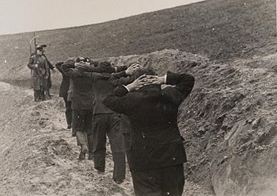

Zbrodnie w Bydgoskiej Dolinie Śmierci
Egzekucje
Bojówkarze paramilitarnego Selbstschutzu oraz funkcjonariusze
Einsatzgruppen zamordowali jesienią 1939 od 1200 do 3000
mieszkańców
Bydgoszczy i okolicznych miejscowości.
Większość ofiar „Doliny Śmierci” stanowili przedstawiciele polskiej i żydowskiej inteligencji oraz duchowieństwa katolickiego.
Fordońska „Dolina Śmierci” jest największą zbiorową mogiłą na terenie Bydgoszczy, a zarazem stanowi najbardziej znany symbol martyrologii mieszkańców miasta w czasie II wojny światowej.
Represje Niemieckie
Niemieckie represje wobec ludności Bydgoszczy charakteryzowało
wyjątkowe nasilenie, co uczyniło z miasta jeden z symboli niemieckich okrucieństw popełnianych w okupowanej Polsce.
Aresztowania i egzekucje, dokonywane w pierwszych dniach okupacji rękami żołnierzy
Wehrmachtu i członków Einsatzgruppen, odbywały się początkowo w atmosferze chaosu i stanowiły zemstę za wydarzenia tzw. bydgoskiej „krwawej niedzieli” z 3-4 września 1939
(niem. Bromberger Blutsonntag) oraz opór stawiany wkraczającym oddziałom niemieckim przez miejscową Straż Obywatelską.
Owe represje przekształciły się później w zorganizowaną akcję eksterminacyjną, której celem była
likwidacja polskiej inteligencji oraz tzw. warstwy przywódczej w Bydgoszczy. Był to zresztą jedynie element szeroko
zakrojonych działań eksterminacyjnych, które okupanci
niemieccy realizowali na całym Pomorzu w ramach tzw. akcji „Inteligencja”.
Od końca września 1939 w Bydgoszczy miała miejsce seria niemieckich „akcji oczyszczających”
wymierzonych – podobnie jak to miało miejsce w innych regionach okupowanej
Polski – w konkretne grupy zawodowe (np. nauczycieli, duchownych katolickich), środowiska społeczne oraz członków organizacji
i stowarzyszeń krzewiących polskość (takich jak Polski Związek Zachodni, Liga Morska i Kolonialna czy Związek Powstańców i Wojaków)
Obławy
14 października 1939 zorganizowano obławę na polskich nauczycieli,
w trakcie której aresztowano 186 pedagogów. 19 października zorganizowano obławę na członków Polskiego Związku Zachodniego,
aresztując 91 z nich (w tym 21 kobiet). 20 października zorganizowano wielką łapankę w okolicach ulicy Kujawskiej.
Zatrzymano wówczas około 1200 ludzi, spośród których wyłowiono po przesłuchaniach 27 osób
Większość Polaków i Żydów zatrzymanych w trakcie owych obław trafiła do bydgoskiego
obozu dla internowanych (Internierungslager), utworzonego w koszarach 15. pułku artylerii lekkiej przy ul. Gdańskiej 147.
Tam o dalszym losie aresztowanych decydowała urzędująca w obozie specjalna komisja, złożona początkowo z SS-manów wchodzących w skład Einsatzgruppe IV
Skazani na śmierć byli rozstrzeliwani bez sądu w odosobnionych miejscach w pobliżu Bydgoszczy.
Początkowo egzekucje miały miejsce w Lesie Gdańskim, w lasach w pobliżu
jeziora Borówno, w okolicach Otorowa, czy przede wszystkim – w rowach strzeleckich pod wsią Tryszczyn.
O wyborze miejsc egzekucji decydował takie czynniki jak: łatwość dojazdu, niewielka odległość od miasta oraz ukształtowanie terenu
Dolina Śmierci
Z powodu przepełnienia ciałami masowych grobów przygotowanych w Tryszczynie, Niemcy
zaczęli się rozglądać za nowym miejscem na przeprowadzanie zbiorowych egzekucji.
Ich wybór padł na dolinę znajdującą się w odległości około 12 kilometrów na północny wschód od Bydgoszczy,
położoną w pobliżu Fordonu – obecnie dzielnicy Bydgoszczy, stanowiącej podówczas samodzielne miasto. Miejsce to wybrano przede wszystkim ze względu na jego oddalenie od siedzib ludzkich
oraz ukształtowanie terenu, które zagłuszało odgłosy strzałów i utrudniało obserwowanie egzekucji.
Tymczasem Fordon już wcześniej doświadczył nazistowskiego terroru, realizowanego
w głównej mierze rękami członków miejscowej placówki Selbstschutzu, kierowanej przez Fryderyka Walthera Gassmanna.
2 października 1939 w publicznej egzekucji pod murem fordońskiego kościoła zginęli: burmistrz Wacław Wawrzyniak, ks. prałat
Henryk Antoni Szuman, ks. wikariusz Herbert Raszkowski oraz pięciu innych mieszkańców miasta. Następnie wymordowano fordońskich
Żydów, których Selbstschutzmani rozstrzelali w dwóch egzekucjach, przeprowadzonych w „Dolinie Śmierci” w dniach: 12 października i
19 października. Przypuszczalnie zginęło wówczas 26 osób. Po tych wydarzeniach na murze fordońskiej synagogi pojawił
się napis Diese Stadt ist Judenfrei (niem. „To miasto jest wolne od Żydów”). Razem z Żydami stracona została pielęgniarka
Stanisława Stawska oraz jej 10-letni syn. Kolejną ofiarą zbrodni fordońskich Niemców była czteroosobowa rodzina miejscowych
kupców Kulpińskich, których rozstrzelano 15 października. Zaraz po egzekucji mieszkanie Kuplińskich zostało zajęte przez Gassmanna.
Pierwszą egzekucję mieszkańców Bydgoszczy przeprowadzono w „Dolinie Śmierci”
w dniu 10 października 1939, a kolejne odbywały się aż do 11 listopada, a według niektórych źródeł – nawet do 26 listopada 1939
Ofiary przywożono na miejsce straceń samochodami ciężarowymi – najczęściej z miejsc internowania,
takich jak bydgoski Internierungslager. Po opuszczeniu samochodu więźniowie musieli przejść
z rękami założonymi na karku przez szpaler obstawy i plutonu egzekucyjnego. W hangarze należącym do byłego
Aeroklubu Bydgoskiego skazańców pozbawiano wierzchniej odzieży, kosztowności oraz innych przedmiotów osobistych.
Prowadzono ich następnie nad wykopane uprzednio groby i tam mordowano strzałami w tył głowy – z broni krótkiej lub karabinów.
Nauczycieli prowadzeni do egzekucji

Grupa Nauczycieli zdjęcie przed egzekucją
Zabierz mnie spowrotem! Na główną strone!